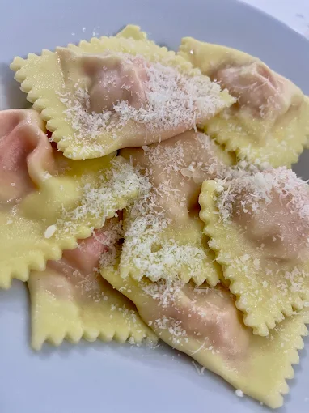
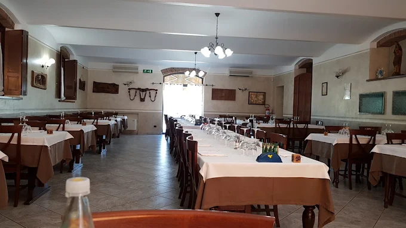

★ N.1
Torta Fritta
con Salumi
Pasta fritta croccante con culatello, coppa, pancetta e salame piacentino DOP
AntipastoTradizione · Territorio · Piacenza
Immersa nella campagna caorsana, la nostra Trattoria porta in tavola pesce di fiume fritto,
pisarei e fasò e la celebre
torta fritta con salumi.
I sapori autentici della nostra terra, preparati con cura e passione dal 1972.
Le Specialità
Ricette di famiglia tramandate di generazione in generazione, con ingredienti del territorio e pasta rigorosamente fatta a mano.
Pasta fritta croccante con culatello, coppa, pancetta e salame piacentino DOP
Antipasto
Gnocchetti di pane e farina con ricco sugo di fagioli borlotti, ricetta storica
Primo
Bocconcini di pesce gatto, anguilla e rane fritte — la specialità della casa
Secondo · € p.p.
Pasta fresca ripiena di stracotto servita nel classico brodo di terza piacentino
Primo
Pesce di fiume marinato in carpione, preparazione tipica della tradizione padana
AntipastoSu prenotazione: alborelle fritte, anguilla o pesce gatto in umido con polenta · Menù personalizzabile a richiesta
La Nostra Storia
«Una cucina di famiglia, nata per passione e rimasta fedele alle sue radici per oltre cinquant'anni.»
Fu il fondatore, con la moglie Gabriella a dare inizio a quest'avventura — oltre 25 anni nella frazione di Muradolo, poi dal 1999 nell'attuale sede: una trattoria immersa nella campagna caorsana, a pochi passi dal casello autostradale in direzione Caorso.
Oggi è il figlio William, insieme alla moglie Monica, a portare avanti questa tradizione. In cucina, William si esprime al meglio con la specialità della casa: il famoso fritto di acqua dolce — bocconcini di pesce gatto, anguilla e rane fritte.
La pasta — pisarei, tortelli, anolini — è rigorosamente fatta in casa. Le verdure vengono dall'orto di proprietà. I salumi sono DOP piacentini. Tre sale accoglienti, atmosfera calda e familiare.

«La vera cucina non si improvvisa: si tramanda con i sapori del cuore.»
— William
Riserva il tuo posto
Compila il modulo sottostante per richiedere la tua prenotazione.
Per prenotazioni veloci
Prenota OraVieni a trovarci
Consigliata la prenotazione, specialmente per gruppi
A pochi passi dal casello autostradale, in direzione Caorso (PC). Sulla sinistra, la strada che porta alla trattoria — immersa nella campagna padana.
Caorso (PC) — Apri in Google Maps →